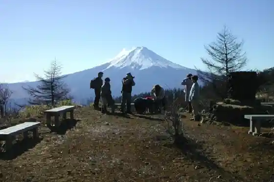
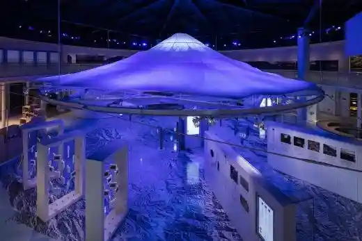
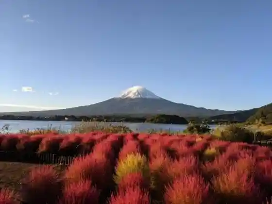
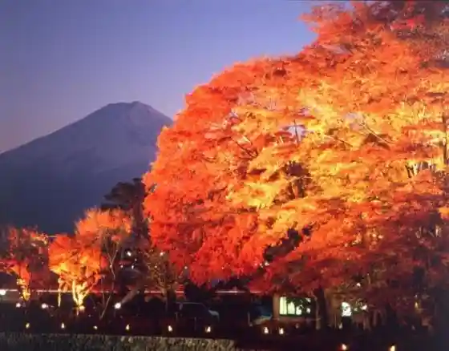

Momiji Tonneru (Momijitonneru)
Fujikawaguchiko, Yamanashi · 0555-72-3168 · Official / source link
San Tsu Toge Yama (Mitsutogeyama)
Fujikawaguchiko, Yamanashi · 0555-72-3168 · Official / source link

Yamanashi Prefectural Fujisan Sekai Isan Center (Yamanashikenritsufujisansekaiisansenta)
Fujikawaguchiko, Yamanashi · 0555-72-0259 · Official / source link

Oishi Park no Kokia | Fujikawaguchiko
Fujikawaguchiko, Yamanashi · 0555-76-8230 · Official / source link

Momiji Kairo
Fujikawaguchiko, Yamanashi · 0555-72-3168 · Official / source link

Kawaguchiko Shizen Seikatsu Kan (Kawaguchikoshizenseikatsukan)
Fujikawaguchiko, Yamanashi · 0555-76-8230 · Official / source link
Kawaguchiko Saru Mawashi Gekijo (Kawaguchikosarumawashigekijo)
Fujikawaguchiko, Yamanashi · 0555-76-8855 · Official / source link
Mori to Mizumi no Rakuen (Moritomizumi no Rakuen)
Fujikawaguchiko, Yamanashi · 0555-73-4116 · Official / source link
Shojiko (Shojiko)
Fujikawaguchiko, Yamanashi · 0555-72-3168 · Official / source link
Ashi Wadayama / Go Mizumi Dai (Ashiwadayama Gokodai)
Fujikawaguchiko, Yamanashi · 0555-72-3168 · Official / source link
San Mizumi Dai (Sankodai)
Fujikawaguchiko, Yamanashi · 0555-72-3168 · Official / source link
Daiyamondo Fuji Byupointo (Ryugagaku) (Daiyamondofujibyupointoryugatake)
Fujikawaguchiko, Yamanashi · 0555-72-3168 · Official / source link
Junigagaku (Junigatake)
Fujikawaguchiko, Yamanashi · 0555-72-3168 · Official / source link
Ryugagaku (Ryugatake)
Fujikawaguchiko, Yamanashi · 0555-72-3168 · Official / source link
O Gaku (Odake)
Fujikawaguchiko, Yamanashi · 0555-72-3168 · Official / source link
Kawaguchiko Sozo Forest (Kawaguchikosozo no Mori)
Fujikawaguchiko, Yamanashi · 0555-72-1170 · Official / source link
Kawaguchiko Fiirudo Center (Kawaguchikofiirudosenta)
Fujikawaguchiko, Yamanashi · 0555-72-4331 · Official / source link
Shikkogo Park (Shikkogokoen)
Fujikawaguchiko, Yamanashi · 0555-72-3168 · Official / source link
Kawaguchiko General Park (Kawaguchikosogokoen)
Fujikawaguchiko, Yamanashi · 0555-72-3168 · Official / source link
Shokai Park (Komikoen)
Fujikawaguchiko, Yamanashi · 0555-72-3168 · Official / source link
Yamanashi Hoseki Museum (Yamanashihosekihakubutsukan)
Fujikawaguchiko, Yamanashi · 0555-73-3246 · Official / source link
Ryugu Horana (Ryugudoketsu)
Fujikawaguchiko, Yamanashi · 0555-72-3168 · Official / source link
Katsuyama Village Folk History Museum (Katsuyamamura Rekishiminzokushiryokan)
Fujikawaguchiko, Yamanashi · 0555-72-3168 · Official / source link
Kawaguchiko Art Museum (Kawaguchikobijutsukan)
Fujikawaguchiko, Yamanashi · 0555-73-8666 · Official / source link
Kawaguchiko Myuzu Kan Yo Yuki Kan (Kawaguchikomyuzukan Ataeyukikan)
Fujikawaguchiko, Yamanashi · 0555-72-5258 · Official / source link
Misaka Toge Kyudo (Misakatogekyudo)
Fujikawaguchiko, Yamanashi · 0555-72-3168 · Official / source link
Hane Koyama / Ichi Mizumi Dai (Hanekoyama)
Fujikawaguchiko, Yamanashi · 0555-72-3168 · Official / source link
Funatsu Tainai Jukei (Funatsutainaijukei)
Fujikawaguchiko, Yamanashi · 0555-72-4331 · Official / source link
Haha no Shirataki (Haha no Shirataki)
Fujikawaguchiko, Yamanashi · 0555-72-3168 · Official / source link
Yagi Saki Park (Yagisakikoen)
Fujikawaguchiko, Yamanashi · 0555-72-3168 · Official / source link
Fujimoto Sei Mizumi Resort (Fuji Shibazakura Festival)
Fujikawaguchiko, Yamanashi · 0555-89-3031 · Official / source link
Fuji Kazana (Fujifuketsu)
Fujikawaguchiko, Yamanashi · 0555-72-6053 · Official / source link
Hane Koyama Haikingukosu (Hanekoyamahaikingukosu)
Fujikawaguchiko, Yamanashi · 0555-72-3168 · Official / source link
Shojin no Osugi (Shoji no Osugi)
Fujikawaguchiko, Yamanashi · 0555-72-3168 · Official / source link
Fuji Oishi Hanaterasu (Fujioishihanaterasu)
Fujikawaguchiko, Yamanashi · 0555-72-9110 · Official / source link
Nature Kobo Ishi Koro Kan (Shizenkoboishikorokan)
Fujikawaguchiko, Yamanashi · 0555-73-4000 · Official / source link
Fuji Omuro Asama Shrine (Fujiomurosengenjinja)
Fujikawaguchiko, Yamanashi · 0555-83-2399 · Official / source link
U no Shima (U no Shima)
Fujikawaguchiko, Yamanashi · 0555-72-3168 · Official / source link
Ubuyagasaki (Ubuyagasaki)
Fujikawaguchiko, Yamanashi · 0555-72-3168 · Official / source link
Kawaguchiko (Kawaguchiko)
Fujikawaguchiko, Yamanashi · 0555-72-3168 · Official / source link
Oishi Park no Kagai Michi (Oishikoen no Hanakaido)
Fujikawaguchiko, Yamanashi · 0555-76-8230 · Official / source link
Nagasaki Park (Nagasakikoen)
Fujikawaguchiko, Yamanashi · 0555-72-3168 · Official / source link
Saiko Neicha Center (Saikoneichasenta)
Fujikawaguchiko, Yamanashi · 0555-72-3168 · Official / source link
Saiko (Saiko)
Fujikawaguchiko, Yamanashi · 0555-72-3168 · Official / source link
Kako Asama Shrine (Kawaguchiasamajinja)
Fujikawaguchiko, Yamanashi · 0555-72-3168 · Official / source link
Fuji Subaru Land (Fujisubarurando)
Fujikawaguchiko, Yamanashi · 0555-72-2239 · Official / source link
Motosuko Campground (Motosukokyanpujo)
Fujikawaguchiko, Yamanashi · 0555-75-0043 · Official / source link
Kawaguchiko Yuransen (Appare (Appare)) (Kawaguchikoyuransen'appare)
Fujikawaguchiko, Yamanashi · 0555-72-0029 · Official / source link
Kawaguchiko Tenjo Yama Park (Kawaguchikotenjoyamakoen)
Fujikawaguchiko, Yamanashi · 0555-72-0363 · Official / source link
Saiko Iyashi no Sato Ne Ba (Saikoiyashi no Satonemba)
Fujikawaguchiko, Yamanashi · 0555-20-4677 · Official / source link
Saiko Yacho no Mori Park (Saikoyacho no Morikoen)
Fujikawaguchiko, Yamanashi · 0555-82-2160 · Official / source link
Garasu Workshop Jizai (Garasukobo Jizai)
Fujikawaguchiko, Yamanashi · 0555-72-5670 · Official / source link
Kawaguchiko Kurafuto Park (Kawaguchikokurafutopaku)
Fujikawaguchiko, Yamanashi · 0555-20-4123 · Official / source link
Fuji Eko Tour Sabisu (Fujiekotsua Sabisu)
Fujikawaguchiko, Yamanashi · 0555-89-2020 · Official / source link
Kantoriireikushisutemuzu (Kantoriireikushisutemuzu)
Fujikawaguchiko, Yamanashi · 0555-20-4052 · Official / source link
Kawaguchiko Fujisan Pa no Ramaropuei (Kawaguchiko Fujisanpa no Ramaropuei)
Fujikawaguchiko, Yamanashi · 0555-72-0363 · Official / source link
Kubota Itchiku Art Museum (Kubotaitchikubijutsukan)
Fujikawaguchiko, Yamanashi · 0555-76-8811 · Official / source link
Fujigamine Koryu Plaza (Fujiganekoryuhiroba)
Fujikawaguchiko, Yamanashi · 0555-89-2511 · Official / source link
Kawaguchiko Ongaku to Mori no Art Museum
Fujikawaguchiko, Yamanashi · 0555-20-4111 · Official / source link
Kawaguchiko Reikusaidokoteji (Ashi Wada Campground) (Kawaguchikoreikusaidokoteji (Ashiwadakyanpujo))
Fujikawaguchiko, Yamanashi · 0555-20-4511 · Official / source link
Saiko Tsuhara Campground (Saikotsuharakyanpujo)
Fujikawaguchiko, Yamanashi · 070-1312-0133 · Official / source link
Kawaguchiko Habu Kan (Kawaguchikohabukan)
Fujikawaguchiko, Yamanashi · 0555-72-3082 · Official / source link
Akaike (Akaike)
Fujikawaguchiko, Yamanashi · 0555-72-3168 · Official / source link
Kawaguchiko Enkei Horu (Kawaguchikoenkeihoru)
Fujikawaguchiko, Yamanashi · 0555-72-3168 · Official / source link
Fujisan Saikuruakuteibiteishoppu BonVelo (Fujisansaikuruakuteibiteishoppubombero)
Fujikawaguchiko, Yamanashi · 0555-22-8588 · Official / source link
Tomitake Kazana (Fugakufuketsu)
Fujikawaguchiko, Yamanashi · 0555-85-3089 · Official / source link
Fuji Tozan Yohin Rentarushoppu LaMont (Fujisantozanyohinrentarushoppuramonto)
Fujikawaguchiko, Yamanashi · 0555-21-1888 · Official / source link
Sanshichi no Wain Kan
Fujikawaguchiko, Yamanashi · 0555-83-3776 · Official / source link
Kasagumo Fujisan (Kasagumofujisan)
Fujikawaguchiko, Yamanashi · Official / source link